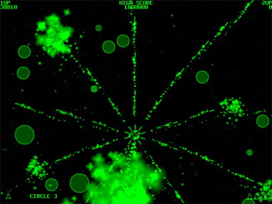

Spheroids vs. Lady Jane
Basically, it's a very fun and very addictive space shooter. You drive a space ship around and shoot missiles at Spheroids. Get rid of all of them, and you clear the sector? Sound easy? The spheroids split every time you shoot them, and they'll split four times before going away. However, once you get rid of the smallest size Spheroid, there's a chance it'll release a Power Cell, giving you either an extra life, or a power up with which to mow down more Spheroids!
With a green gamma, huge explosions, and a fantastic soundtrack to boot, all you Mac users just have to go on and download it!
All you Windows users will just have to gawk at this screenshot:
Basically, it's a very fun and very addictive space shooter. You drive a space ship around and shoot missiles at Spheroids. Get rid of all of them, and you clear the sector? Sound easy? The spheroids split every time you shoot them, and they'll split four times before going away. However, once you get rid of the smallest size Spheroid, there's a chance it'll release a Power Cell, giving you either an extra life, or a power up with which to mow down more Spheroids!
With a green gamma, huge explosions, and a fantastic soundtrack to boot, all you Mac users just have to go on and download it!
All you Windows users will just have to gawk at this screenshot:
